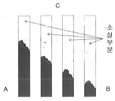
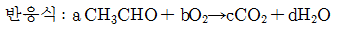
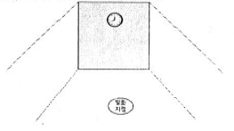
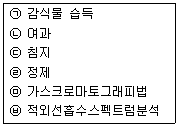

화재감식평가산업기사 (2017-09-23 기출문제)
1과목: 화재 조사론
1. 화재현장에서 열에 의한 전구의 변형에 대한 설명으로 옳은 것은?
- 화염이 전달되는 방향의 구면에서 변형이 먼저 발생한다.
- 벌브가 개방된 이후에 다른 방향에서 화염이 전달되었을 때에도 함몰이나 돌출되는 변형이 발생한다.
- 전선에 매달린 전구는 화재당시의 방향을 신뢰할 수 있으므로 방향지표로 사용할 수 있다.
- 백열전등에서 보이는 화재패턴으로 수은등과 같은 대형전구에서는 변형이 발생하지 않는다.
(정답률: 63%)

2. 자연발화의 원인으로 볼 수 없는 것은?
- 환원열
- 분해열
- 흡착열
- 발효열
(정답률: 78%)
3. 다음 중 연소하한계가 가장 낮은 것은?
- CH4(메탄)
- C3H8(프로판)
- C4H10(부탄)
- H2(수소)
(정답률: 59%)
4. 화재현장 보존의 중요성에 대한 설명으로 틀린 것은?
- 조사대상인 화재현장은 현장조사가 개시될 때까지 화재진압 또는 진화 후의 현장과 거의 같은 상황으로 보존되어야 한다.
- 현장조사를 하기 전에 현장의 보존 상태를 반드시 확인 하고 변화가 없을 때 본격적인 현장조사를 실시한다.
- 화재현장은 감식 및 발굴 작업에 따라 훼손되어 전의 상태로 북구가 어렵다.
- 소방활동 중 증거물의 위치이동 여부의 확인 없이 신속히 조사한다.
(정답률: 84%)
5. 다음 금속 중 용융점이 가장 낮은 것은?
- 알루미늄
- 납
- 구리
- 스테인리스
(정답률: 73%)
6. 소방대상물의 내부(가로10m, 세로10m, 높이3m)에 가연물의 발열량 9000kcal/kg, 무게 3000kg, 단위발열량 4500kcal/kg 일 때 화재하중은 몇 kg/m2인가?
- 50
- 60
- 70
- 80
(정답률: 62%)
7. 폭발의 발생 및 성장 원인으로 틀린 것은?
- 폭굉 한계 내의 가스가 어느 정도 다량으로 존재 할 때
- 존재된 잔여가스에 방전이나 화염, 충격 등 점화원이 작용할 때
- 폭발범위 내에 불활성가스가 존재할 때
- 폭발 충격으로 인한 파이프 파열로 2차적 폭발이 일어날 때
(정답률: 76%)
8. 목재류가 연소할 때 나무표면의 박리현상은 화염 또는 소화수에 의해 형성되는데 이 중 소화수에 의한 현상으로 옳은 것은?
- 박리현상의 형성부분이 많고 깊에 형성된다.
- 박리면적이 비교적 작고 표면이 거칠다.
- 박리부분이 여기 저기 산재되어 있는 특징을 가진다.
- 비교적 평탄하고 윤기가 나며 그 면적이 넓다.
(정답률: 63%)
9. 기화열이 원인이 되어 생성되는 유류화재의 패턴은?
- 포어패턴
- 레인보우패턴
- 틈새연소패턴
- 도넛 패턴
(정답률: 67%)
10. 폭발에 대한 설명으로 틀린 것은?
- 분무폭발은 기상폭발의 한 종류이다.
- 감압폭발은 응상폭발의 한 종류이다.
- 전선이 고상에서 급격히 액상을 거쳐 기상으로 전이할 때 발생되는 폭발은 전선폭발이다.
- 고온의 용융금속이 물속에서 급속냉각 될 때 폭발은 과열액체 증기폭발이다.
(정답률: 62%)
11. 목재의 연소상황에 대한 다음 그림을 참고하여 화재가 진행된 방향으로 옳은 것은?

- A → B
- B → A
- C → A
- C → B
(정답률: 75%)
12. 건축물 화재 시 플래시 오버(Flash over) 발생에 영향을 미치는 요인이 아닌 것은?
- 개구부의 크기
- 내장재료
- 화원의 크기
- 건물의 높이
(정답률: 72%)
13. 폭열(Spalling)의 발생원인이 아닌 것은?
- 흡수율이 큰 골재의 사용
- 내화성이 약한 골재의 사용
- 콘크리트 내부 함수율이 낮을 때
- 콘크리트의 치밀한 조직으로 화재 시 수증기 배출이 안 될 때
(정답률: 66%)
14. 화염이 버너의 상부를 떠나 연소하는 현상인 리프팅(Lifting)에 대한 설명으로 틀린 것은?
- 가스압력이 높아 분출속도가 빠를 때
- 공기 조절기가 닫혀 1차 공기 흡입량이 없을 때
- 연소실내 급배기 불량으로 2차 공기가 급격히 감소 할 때
- 가스 방출구가 막혀 분출속도가 빠를 때
(정답률: 58%)
15. 아세트알데히드 완전 연소반응식의 양론계수로 옳은 것은?

- a : 2, b : 4, c : 4, d : 4
- a : 2, b : 5, c : 4, d : 4
- a : 2, b : 3, c : 2, d : 2
- a : 1, b : 2, c : 2, d : 2
(정답률: 66%)
16. 연소 시 열분해에 의해서 탄화수소가 발생할 수 없는 물질은?
- 나무
- 종이
- 백탄
- 열경화성 플라스틱
(정답률: 57%)
17. 철 구조물의 만곡에 대한 설명으로 옳은 것은?
- 하중이 없는 상태에서 화염을 받은 부분의 열팽창률이 높아져 열을 받은 방향으로 휘어진다.
- 철공릐 만곡은 발화부에서만 볼 수 있는 특징으로, 조사 범위를 축소시켜 준다.
- 만곡 및 도괴는 설치각도, 가연물 적치 상태 등에 따라 변형될 수 있다.
- 철골의 만곡은 지붕 등 하중에 의한 영향은 거의 없고 열에 노출된 강도에 따라 형성된다.
(정답률: 74%)
18. 화재 시 발생되는 연기에 대한 설명으로 틀린 것은?
- 연소시의 발생가스로서 산소공급이 부족할 때 적은 양이 발생한다.
- 가연물 연소 시 발생되는 열분해 생성물이다.
- 불완전연소에 의해 많이 발생한다.
- 화재 시 발생되어 시야장애 및 질식을 유발할 수 있다.
(정답률: 75%)
19. 목재의 탄화심도를 측정 시 유의사항으로 옳은 것은?
- 요철()부위중 요()부위를 게이지로 측정한다.
- 게이지로 측정된 깊이 외에 이미 소실된 부위의 깊이를 더하여 비교해야 한다.
- 게이지를 사용할 때 깊이 측정될 수 있도록 되도록 강력한 힘으로 눌러 삽입한다.
- 깊이 측정될 수 있도록 끝이 뾰족한 게이지를 사용한다.
(정답률: 64%)
20. 소방기본법 시행규칙에 따른 화재조사의 실시 시점으로 옳은 것은?
- 소화활동과 동시에 실시
- 화재발생 징후 포착과 동시에 실시
- 화재발생과 동시에 실시
- 화재진압 후에 실시
(정답률: 47%)
2과목: 화재 감식론
21. 스트립 기법이라고도 하며, 조사해야 할 지역이 크고 개방된 공간의 경우 효과적인 산불 조사기법은?
- 루프 기법
- 좁은 길 기법
- 나선법
- 격자 기법
(정답률: 56%)
22. 밀폐된 공간에서 아래 그림처럼 실내 중간에서 화재가 발생하였다. 현재 8시를 가르키고 있다면 시게가 열을 받아 가장 먼저 변형이 되는 위치로 옳은 것은? (단, 복사열은 무시한다.)

- 12시 방향
- 9시 방향
- 6시 방향
- 3시 방향
(정답률: 73%)
23. 임야화재 가연물의 수직적 위치에 따른 분류가 아닌 것은?
- 지중가연물
- 지표가연물
- 공중가연물
- 지상가연물
(정답률: 49%)
24. 외부 화염에 의한 전선 피복 소손혼에 대한 설명으로 틀린 것은?
- 저전압에서 사용되고 있는 절연 전선은 보통 230~280℃부터 급격한 분해가 일어나며 400℃ 정도에서 인화한다.
- 절연 전선은 발화하기 전에 탄화하여 스폰지상으로 팽창하여 연소 시 짙은 연기가 발생한다.
- 화염이 직접 노출된 전선의 외부 피복에서는 내부로 탄화가 진행된 것을 식별하기 어려운 경우가 많다.
- 외부 화염에 노출되어 불에 탄 부분과 타지 않은 부분의 경계선이 명확하다.
(정답률: 33%)
25. 발화원의 생성, 이동 및 가열에 대한 설명으로 틀린 것은?
- 모든 가연물은 발화원으로부터 이동된 에너지에 대해 동일한 반응을 보인다.
- 발화과정은 크게 발화원의 생성, 이동 및 가열로 정리될 수 있다.
- 유력한 발화원은 가연물을 발화 온도에 다다르게 할 만큼 에너지 수준이 충분히 높을 것으로 추정해 볼 수 있다.
- 발화원의 열에너지는 전도, 대류, 복사 등의 방법을 통해 가연물로 이동되어 진다.
(정답률: 78%)
26. 석유류의 화재로 추정되는 화재현장으로부터 수집된 시료를 기기분석(GC, IR)을 통하여 판별하는 절차로 옳은 것은?

- ㉠→㉡→㉢→㉣→㉤→㉥
- ㉠→㉡→㉢→㉣→㉥→㉤
- ㉠→㉢→㉡→㉣→㉤→㉥
- ㉠→㉢→㉡→㉣→㉥→㉤
(정답률: 56%)
27. 전기히터로 물을 끓일 때 600W로 10분이 걸린다면 이때의 전력량은 몇 kWh 인가?
- 1
- 6
- 0.6
- 0.1
(정답률: 49%)
28. 그라인더 불티에 의한 화재의 설명으로 틀린 것은?
- 종이 등 셀룰로오즈 가연물에 착화가 용이하다.
- 상황에 따라서 장시간 잠복이 가능하다.
- 용접작업 시 발생하는 불티보다 크기 때문에 발견이 쉽다.
- 그라인더 불티 화재의 판정을 위해 비산범위 내 출화인지 확인이 필요하다.
(정답률: 78%)
29. 디에틸에테르(C2H5OC2H5)에 관한 설명으로 틀린 것은?
- 인화점과 발화점이 높아 화재위험성이 작다.
- 저장 시 직사광선을 피하고 소량은 갈새경에 저장한다.
- 무색투명한 유동성의 액체로 마취작용이 있다.
- 공기 중에 장기간 저장 시 산화되어 불안정한 폭발성의 과산화물을 만든다.
(정답률: 71%)
30. 의도적으로 한 장소에서 다른 장소로 연소를 확산시키기 위한 장치나 도구로서 인화성 액체와 고체 가연물이 사용된 연소흔적은 무엇이라 하는가?
- 트레일러 패턴
- 고스트 마크
- 스프래쉬 패턴
- 포어 패턴
(정답률: 73%)
31. 선박외관의 구성요소가 아닌 것은?
- 선체 건조
- 갑판
- 저장소 및 화물창
- 외관부속품
(정답률: 62%)
32. 차량화재의 특수성을 설명한 것으로 옳은 것은?
- 화재하중이 높은 환기지배형 화재
- 화재하중이 높은 연료지배형 화재
- 화재하중이 낮은 환기지배형 화재
- 화재하중이 낮은 연료지배형 화재
(정답률: 75%)
33. 가연성가스의 폭발범위의 설명으로 틀린 것은?
- 일반적으로 가스압력이 높을수록 발화온도는 낮아지고, 폭발범위는 넓어진다.
- 가연성 가스라 함은 폭발하한계가 10% 이하인 것과 폭발하한과 상한의 차이가 20% 이상인 것을 말한다.
- 일반적으로 가스압력이 높을수록 발화온도는 낮아지고, 폭발범위는 좁아진다.
- 일반적으로 가스의 압력이 낮아지면 폭발범위가 좁아진다.
(정답률: 78%)
34. 선박의 추진기가 아닌 것은?
- 물분사 추진(water jet propulsion)
- 상반회전 프로펠러(counter-rotating propeller)
- 포드 프로펠러(pod propeller)
- 수중익(hydrofoil)
(정답률: 62%)
35. 부탄가스의 내용적 3.6L 용기에 몇 kg을 충전할 수 있는가? (단, 충전상수는 2.⑤ 이다.)
- 0.57
- 1.76
- 5.65
- 7.38
(정답률: 67%)
36. 발화원인 판정에 관한 설명 중 틀린 것은?
- 화재의 원인을 판정하기 위해서는 화재를 일으킨 물질, 주변 상황, 인적요인을 확인하여야 한다.
- 발화지점을 명확히 지정하지 못하고 다른 잠재적 발화지점을 배제할 수 없을 때에는 발화원에 대해 추정해서는 안 된다.
- 어떠한 경우라도 물리적 증거물이 있어야만 화재원인에 관한 판정을 할 수 있다.
- 현장 감식 결과 발화원으로 추정되는 물질이 발견되었을 때는 과학적으로 설명할 수 있어야 한다.
(정답률: 73%)
37. 성냥용기의 측약에 사용되는 발화제 물질은?
- 초산비닐에멀젼
- 황화안티몬
- 적린
- 염소산칼륨
(정답률: 66%)
38. 다음 화학반응 중 결합반응이 아닌 것은?
- 두 원소가 하나의 화합물로 되는 결합
- 한 원소와 한 화합물이 새로운 화합물을 만드는 결합
- 두 화합물이 새로운 화합물을 만드는 결합
- 화합물의 한 원소가 다른 원소에 의해 대치되는 반응
(정답률: 81%)
39. 자동차 냉각장치의 기능에 대한 설명으로 틀린 것은?
- 워터재킷은 엔진에서 발생한 열을 식히기 위해서 실린더 블록이나 실린더 헤드에 있는 냉각수의 통로이다.
- 워터펌프는 냉각수를 순환시키는 펌프로 V벨트에 연결되어 구동된다.
- 서모스탯은 차량의 주행에 의해 들어오는 공기에 의해 냉각수를 냉각시키기 위한 장치이다.
- 팬은 라디에이터를 지나는 공기의 흐름을 빨리하여 라디에이터의 냉각을 증대하는 작용을 한다.
(정답률: 66%)
40. 화재현장에서 방화의 일반적인 특징이 아닌 것은?
- 2개 이상의 발화개소가 식별된 경우
- 연소 촉진제(휘발유, 시너)의 사용흔적이 발견된 경우
- 침입흔적이 있는 경우
- 발열기구가 발견된 경우
(정답률: 78%)
3과목: 증거물 관리 및 법과학
41. 물적 증거의 테스트 방법 중 금속, 세라믹류 또는 흙과 같은 휘발성이 아닌 물질에 있는 개별 원소들을 구분할 수 있는 방법은?
- 가스 크로마토그래피(GC)
- 원자흡광분석(AA)
- 적외선 분광 광도계(IR)
- 엑스레이 형광 분석 (X-Ray Flourescence)
(정답률: 55%)
42. 생체의 생활반응과 비교한 사체의 반응에 관한 설명으로 틀린 것은?
- 생체의 혈액은 외부의 힘에 의해 혈관이 파괴되면 용솟음치듯 내뿜으며 출혈하지만 사체는 파괴된 혈관 부근에서 혈액이 흘러나오는 정도로 끝난다.
- 생체가 둔기에 맞으면 피부가 파괴되지 않아도 피부 아래의 모세혈관이 파괴되면서 피부 조직안으로 출혈해서 피가 굳는 응혈현상이 생기는 것에 반해, 사체는 응혈현상이 없다.
- 생체가 열기를 받으면 물집이 생기나 사체는 물집이 잠시 생겼다 사라지면서 충혈되고 빨간 부스럼이 생긴다.
- 살아 있던 사람이 익사하거나 불에 타 죽는 경우, 입에서 하얗고 빽빽한 점액성의 거품이 부풀어 오르고, 죽은 사람을 물속에 넣거나 태울 때에는 이러한 증상이 나타나지 않는다.
(정답률: 67%)
43. 화상 중 열탕화상에 대한 설명으로 옳은 것은?
- 열탕화상은 대부분 뜨거운 액체와 화염에 의한 조직손상을 말한다.
- 과열된 기름에 의한 것 외에는 건열화상처럼 타거나 탄화되며 체모가 그슬러져 있다.
- 감염은 동반될 수 없고 화상이 광범위하여도 쇼크는 오지 않는다.
- 피부화상이 온몸에 일정하게 퍼져 있는 경우를 제외하고는 건열화상과 비슷하다.
(정답률: 50%)
44. 물적증거 형태의 세부내용에 대한 설명으로 옳은 것은?
- 전문증거는 자신이 직접 인지한 사실이 아니라 다른 사람이 말한 것에 대한 증거로 다른 사람의 신뢰성에 의존하는 증거이다.
- 확증증거는 개인의 지식 또는 관찰에 의하지 않은 추론에 의한 증거이다.
- 정황증거는 다른 증거물을 강화하거나 확증하는 증거이다.
- 오염증거는 의심되지만 다른 증거에 의해 사실로 간주되는 증거이다.
(정답률: 59%)
45. 화재증거물수집관리규칙에서 규정하고 있는 증거물 시료용기가 아닌 것은?
- 유리병
- 양철 캔
- 주석도금 캔
- 폴리에틸렌 플라스틱병
(정답률: 75%)
46. 액체 및 고체 증거물의 수집 시 고려해야 할 사항으로 옳은 것은?
- 탄화수소계 물질은 물보다 비중이 높아 물에 가라앉는다.
- 대부분의 액체 위험물은 용매작용을 한다.
- 금속캔에는 3/4이상 채우지 않는다.
- 아세톤이나 알코올은 물과 쉽게 섞이지 않는다.
(정답률: 62%)
47. 시반에 관한 설명으로 옳은 것은?
- 시반은 사망 시간을 나타내는 지표로 사용된다.
- 시반은 시신의 사망 전 이동 여부를 나타낸다.
- 시반은 3~4 시간 후에 더 이상 진행되지 않는다.
- 시반은 우리 몸의 가장 높은 신체부위에 발생한다.
(정답률: 74%)
48. 둔체가 피부를 눌렀을 때 유두진피의 모세혈관이 터져 미세한 점출혈이 형성된 형태는?
- 피하출혈
- 줄모양출혈
- 피내출혈
- 피외출혈
(정답률: 54%)
49. 가스크로마토그래피의 주요 구성요소가 아닌 것은?
- 프리즘
- 분리 칼럼
- 고압가스 실린더
- 검출기와 기록기
(정답률: 57%)
50. 강화유리가 폭발로 깨졌을 때 나타나는 형태로 옳은 것은?
- 곡선모양
- 입방체모양
- 원형모양
- 격자모양
(정답률: 71%)
51. 화재현장에서의 물적 증거물에 관한 설명으로 틀린 것은?
- 화재현장의 환경에 따라 물증은 변하지 않는다.
- 화재원인의 추론에 따라 화재책임이 관련된다.
- 특정사실이나 결과에 대하여 입증 또는 반증을 가능하게 한다.
- 발화지점, 발화기기, 최초 착화물, 화재이동 경로를 통하여 화재원인을 추론한다.
(정답률: 77%)
52. 화상의 위험도 결정요소가 아닌 것은?
- 깊이와 범위
- 피부의 깊이
- 합병된 외상
- 화열의 강도
(정답률: 45%)
53. 증거물의 물리적 손상 없이 내부구조를 파악하는 유용한 분석장비는?
- 비디오카메라
- 비파괴촬영기
- 디지털카메라
- 광학카메라
(정답률: 77%)
54. 화재사와 관련된 신체의 소실에 관한 설명으로 옳은 것은?
- 화염에 휩싸인 방에서 사체는 가연물에 일부가 될 수 없다.
- 동물성 지방은 30J/kg 정도의 연소열을 갖고 있다.
- 뼈는 골수와 조직을 공급하지 못하므로 가연물의 양을 감소시킨다.
- 두개골은 열을 받게 되면 골절되거나 분해된다.
(정답률: 60%)
55. 화상사의 사체소견으로 틀린 것은?(오류 신고가 접수된 문제입니다. 반드시 정답과 해설을 확인하시기 바랍니다.)
- 각 장기에서 빈혈상을 보인다.
- 피부 표면에 1도에서 4도의 화상이 보인다.
- 내부 장기는 열로 인해 부풀어 오른다.
- 사망이 지연되면 실질장기의 혼탁종창이 나타난다.
(정답률: 26%)
56. 지문의 구성요소(성분) 중 화재(열)dp 견디는 능력이 가장 강한 것은?
- 물
- 소금
- 피부기름
- 단백질
(정답률: 56%)
57. 액체 촉진제와 고체 촉진제용 수집용기에 대한 설명으로 틀린 것은?
- 미사용 청정 금속캔 사용을 권장하며, 증기 수집을 위한 공간을 허용하기 위해 캔은 2/3이상 채워서는 안된다.
- 유리병 뚜껑에는 접착제 성분 라이너나 고무씰이 있는 것을 사용하여 기밀유지토록 한다.
- 특수하게 제작된 백을 수집용으로 사용할 수 있다.
- 플라스틱 백은 방화도구나 고체 가속제의 잔유물을 포장하는 데 사용되지만 침투성이 있어 증거물이 소모되거나 오염될 수 있다.
(정답률: 70%)
58. 사진촬영을 위해 현장 전체를 파악할 수 있는 선정 위치로 옳은 것은?
- 발화가 개시된 건물 정면
- 발화지점 내부
- 발화지역 주변의 높은 곳
- 화염이 강하게 출화한 곳
(정답률: 73%)
59. 연소가스 중 고농도의 이것은 눈에 접촉되면 점막을 심하게 자극하여 결막부종 및 각막혼탁을 초래하고 시력장애의 후유증을 남기는 경우가 있으며, 흡입하면 폐수종을 일으키거나 호흡정지를 일으키는 경우도 있다. 주로 냉동시설의 냉매로 많이 쓰이고 있으므로 냉동창고 화재 시 누출가능성이 큰 가스는?
- 아황산가스(SO2)
- 시안화수소(HCN)
- 암모니아(NH3)
- 포스겐(COCL2)
(정답률: 60%)
60. 국소적 생활반응에 해당하는 것은?
- 출혈 및 응혈
- 속발성 염증
- 색전증
- 외래물질의 분포
(정답률: 61%)
4과목: 화재조사 관계법규 및 피해평가
61. 화재피해의 조사 및 피해액 산정순서로 옳은 것은?
- 기본현황 조사 → 피해정도 조사 → 화재현장 조사 → 재구입비 산정 → 피해액 산정
- 화재현장 조사 → 피해정도 조사 → 기본현황 조사 → 재구입비 산정 → 피해액 산정
- 기본현황 조사 → 피해정도 조사 → 재구입비 산정 → 피해액 산정 → 화재현장 조사
- 화재현장 조사 → 기본현황 조사 → 피해정도 조사 → 재구입비 산정 → 피해액 산정
(정답률: 59%)
62. 화재피해액 산정기준에서의 화재피해액 산정 대상이 아닌 것은?
- 애완동물
- 영업이익
- 원재료
- 식물
(정답률: 76%)
63. 소방활동구역의 설정 및 현장보존에 대한 기준 중 틀린 것은?
- 소방활동구역의 설정은 필요한 최대의 범위로 한다.
- 소방활동구역의 관리는 수사기관과 상호 협조하여야 한다.
- 소방활동구역의 표시는 로프 등으로 범위를 한정하고 경고판을 부착하며 출입을 통제하는 등 현장보존에 최대한 노력하여야 한다.
- 소방본부장 또는 소방서장은 소화활동 시 현장물건 등의 이동 또는 파괴를 최소화하여 원활한 화재조사활동이 이루어 질 수 있도록 현장보존에 노력하여야 한다.
(정답률: 79%)
64. 화재조사를 하는 관계 공무원이 화재조사를 수행하면서 알게 된 비밀을 다른 사람에게 누설한 자에 대한 벌칙 기준으로 옳은 것은?
- 1000만원 이하의 벌금
- 500만원 이하의 벌금
- 300만원 이하의 벌금
- 200만원 이하의 벌금
(정답률: 67%)
65. 공구·기구의 손새정도가 보통인 경우의 손해율은?
- 10%
- 30%
- 50%
- 80%
(정답률: 60%)
66. 5년 후 철거예정인 노숙자 쉼터에서 화재가 발생하여 150m2가 소실된 경우 이 철거건물의 피해액은? (단, 이 건물은 철골조이며, m2당 재건축비는 730천원이고, 내용년수는 50년이다.)
- 30660천원
- 33726천원
- 31660천원
- 34726천원
(정답률: 43%)
67. 화재피해액 산정 시 건물에 포함하여 피해액을 산정하는 것은?
- 건물의 소화설비
- 건물의 가스설비
- 건물의 승강기설비
- 건물에 부착된 간판
(정답률: 67%)
68. 화재현장 조사서 작성 시 유의사항으로 틀린 것은?
- 보험가입 현황 기재
- 신고 및 초기조치 기재(필요시 시간대별 조치사항 및 녹취록 작성)
- 화재발생 이후 상황만 정확히 기재
- 필요시 인명구조 활동내역 작성
(정답률: 61%)
69. 화재조사 및 보고규정상 용어의 정의 중 틀린 것은?
- 내용연수란 고정자산을 경제적으로 사용할 수 있는 연수를 말한다.
- 재구입비란 화재 당시의 피해물과 같거나 비슷한 것을 재건축(설계 감리비를 포함)
- 잔가율이란 화재 당시에 피해물의 재구입비에 대한 현재가의 비율을 말한다.
- 손해율이란 피해물의 경제적 내용연수가 다한 경우 잔존하는 가치의 재구입비에 대한 비율을 말한다.
(정답률: 68%)
70. 화재현황 조사서 작성 시 화재원인의 기재항목이 아닌 것은?
- 연소확대사유
- 발화열원
- 발화요인
- 최초착화물
(정답률: 66%)
71. 화재현장조사서 작성 시 도면 작성에 관한 사항 중 옳은 것은?
- 도면의 표제는 이해를 쉽게하기 위해 발화건물 평면도, 발화지점 평면도 등으로 한다.
- 도면의 위치는 소방대의 부서위치를 중심하고 발화건물을 상방향에 두는 방법으로 방향을 잡는다.
- 거리측정은 기둥의 중심에서 다른 기둥의 중심까지로 기준점을 둔다.
- 도면에 사용하는 기호는 제도기호 등 표준화된 기호를 사용하고 문자 삽입은 피한다.
(정답률: 58%)
72. 화재현장 출동보고서 작성 시 기재항목이 아닌 것은?
- 화재건물 현황
- 현장도착 시 발견사항
- 소방대 이외의 강제적인 진입흔적
- 출입문 상태 및 소방대 건물 진입방법
(정답률: 63%)
73. 긴급상황을 보고하여야 할 중요화재가 아닌 것은?
- 시장화재
- 지하구화재
- 이재민 100명이상 발생화재
- 외국공관 및 그 사택의 화재
(정답률: 69%)
74. 소방·방화시설 활용조사서 작성 시 기재항목이 아닌 것은?
- 초기 소화활동
- 동력인원
- 방화셔터 작동여부
- 가스누설경보기 경보여부
(정답률: 70%)
75. 소방기본법상 용어의 정의 중 틀린 것은?
- 소방대상물 : 건축물, 차량, 선박(선박으로 운항중인 선박 포함), 선박 건조 구조물, 산림, 그 밖의 인공 구조물 또는 물건
- 관계지역 : 소방대상물이 있는 장소 및 그 이웃 지역으로서 화재의 예방·경계·진압, 구조·구급 등의 활동에 필요한 지역
- 관계인 : 소방대상물의 소유자·관리자 또는 점유자
- 소방대장 : 소방본부장 또는 소방서장 등 화재, 재난·재해, 그 밖의 위급한 상황이 발생한 현장에서 소방대를 지휘하는 사람
(정답률: 74%)
76. 정당한 사유 없이 화재조사 관계 공무원의 출입 또는 조사를 거부·방해 또는 기피한 자에 대한 벌칙으로 옳은 것은?
- 100만원 이하의 벌금
- 200만원 이하의 벌금
- 300만원 이하의 벌금
- 400만원 이하의 벌금
(정답률: 65%)
77. 화재발생종합보고서 작성 시 건물의 동수 산정 기준으로 틀린 것은?
- 주요구조부가 하나로 연결되어 있는 것은 1동으로 한다. 다만, 건널 복도 등으로 2이상의 동에 연결되어 있는 것은 그 부분을 절반으로 분리하여 각 동으로 한다.
- 구조와 관계없이 지붕 및 실이 하나로 연결되어 있는 것은 동일동으로 본다.
- 목조 또는 내화조 건물의 경우 격벽으로 방화구획이 되어 있는 경우는 별동으로 한다.
- 독립된 건물과 건물 사이에 차광막, 비막이 등의 덮개를 설치하고 그 밑을 통로 등으로 사용하는 경우는 별동으로 한다.
(정답률: 67%)
78. 화재조사 및 보고규정상 건물의 화재피해 범위가 건물의 6면 중 천장 15m2, 한쪽 벽 5m2이 소실된 경우의 소실면적은 몇 m2인가?
- 4
- 15
- 16
- 20
(정답률: 61%)
79. 질문기록서의 작성 등에 대한 설명으로 틀린 것은?
- 질문기록서가 증거로서 가치를 가지기 위해서는 진술이 임의로 행해진 것이어야 한다.
- 미성년자에 대한 질문은 객관성유지를 위하여 친권자 등의 입회를 배제하여야 한다.
- 녹취를 종료하는 경우, 녹취내용에 오류가 없는지 확인시키 후 서명을 받는다.
- 질문의 권한은 소방법상 소방서장에게 있다.
(정답률: 65%)
80. 모든 화재에 공통적으로 작성하여야 하는 서식으로 옳은 것은?
- 화재현장조사서, 질문기록서
- 화재현황조사서, 재산피해신고서
- 화재현황조사서, 인명피해신고서
- 화재현장조사서, 화재현황조사서
(정답률: 74%)